Separate paths
Draw all the possible paths that start from the black circle and pass once in each white box.
Drag or click on the boxes to extend or reduce the path.
Draw all the possible paths that start from the black circle and pass once in each white box.
Drag or click on the boxes to extend or reduce the path.
To begin, either we go to the right, or we go to the left. If we go to the right, we can climb, but we are stuck, because there is no path that passes through the two boxes marked with a red cross.

We could also go right, then go up or left, but in both cases we are also stuck.
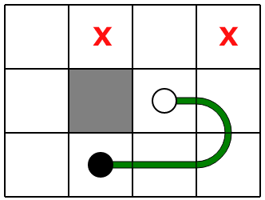
Let's try to start from the beginning to the left, moving forward as long as we have no choice. We reach a situation where we can either go down or go to the right.
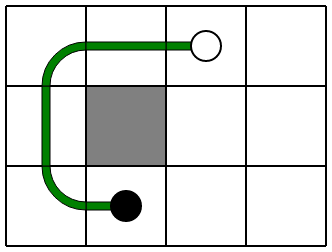If we go down, there is only one way to complete the path.

If instead we go to the right, we can find two possible paths, depending on whether we go first to the left or first well down.
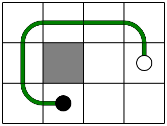In summary, here are the 3 possible paths.
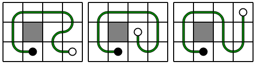To start, either we go down, or we go to the right. If we go down, we can go right, but we are stuck, because there is no path through the two boxes marked with a red cross.
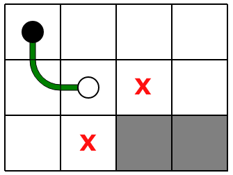If you go down twice, then you have to go back up.

From there, there are 3 possible paths.
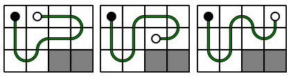Let's start from the beginning and try now to go to the right. If we go right then down, we reach a situation in which we are stuck. Here again, there is no path that passes through the two marked boxes.

If you go twice to the right before going down, you're still stuck.
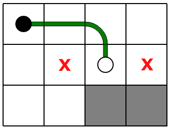So, you have to go three times to the right. Then we have no choice we must come back. We arrive at the situation below.

From there, there are 2 other possible paths.
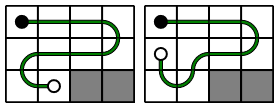To start, either we go to the left or we go up. Let's first look at departures to the left. We will see that none of them leads to a solution. If we go to the left, then to the top, we are stuck because there is no path through the two boxes marked with a red cross.

 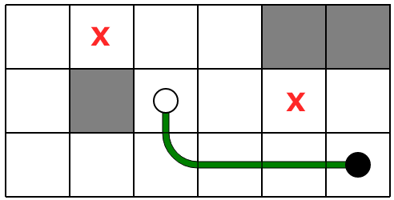
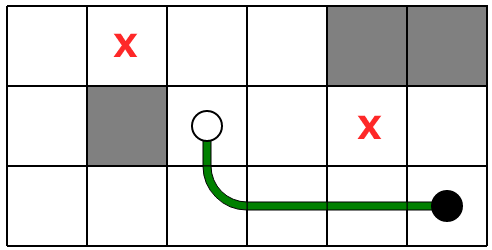
If you go 4 times to the left, you have to go around and go up on the left. But then, whatever the path that we try to take, we find ourselves stuck.


Let's start from the beginning and try to go upwards. We have to turn left immediately.
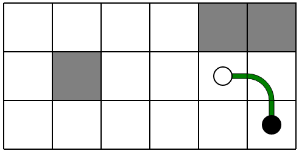Among the possible starts, the first three lead to stuck situations, in which it is not possible to find a path through all the red crosses.


The only possible departure is the following.

When climbing, there are 3 possible paths.

Going left, there are the other 3 possible paths.
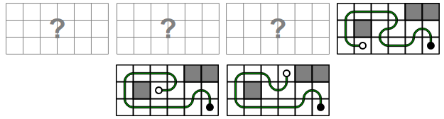This challenge proposes to practice a exhaustive exploration of paths, optimized with an early detection of dead branches , which corresponds to noticing at certain moments that we will inevitably be stuck and there is no point in continuing.
Many computer algorithms exploit this strategy, better known as branch and bound . This strategy applies very well to quickly find valid solutions in problems where the number of possibilities is potentially gigantic, but it is in fact relatively easy to evaluate if a beginning of solution is inevitably doomed to failure.